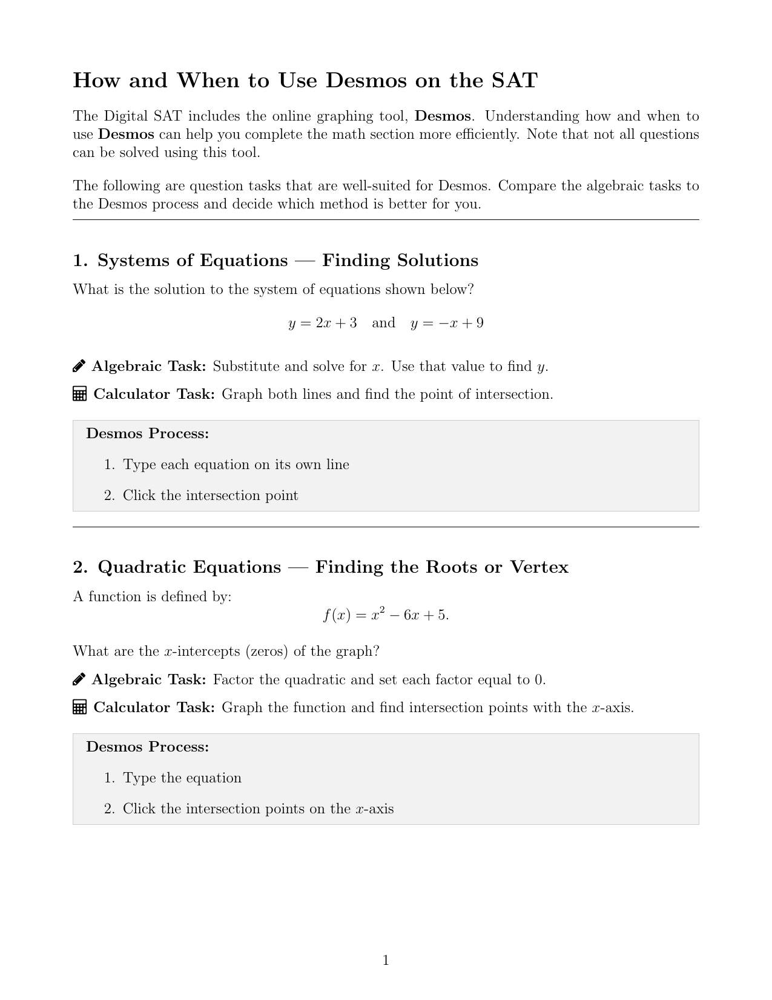
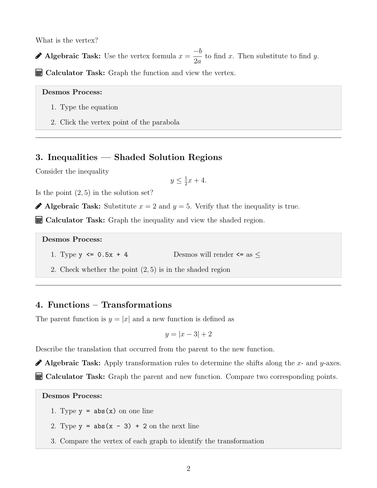

How and When to Use
Desmos on the SAT
A student-facing reference guide that teaches when the graphing calculator is the right tool — not just how to use it.
The Gap
Students preparing for the Digital SAT often approached Desmos as either a crutch or an afterthought — either reaching for it reflexively or ignoring it entirely. The underlying problem wasn't tool familiarity; it was that students lacked a reliable framework for deciding which method was faster given their own algebra proficiency.
A student comfortable factoring a quadratic quickly doesn't gain much from graphing it. A student who struggles with factoring can find the roots in seconds using Desmos. The same tool has different value depending on where the learner is — and that judgment is something that can be taught explicitly.
The Design
The guide is organized around a core question: is the algebraic path or the calculator path faster for you, right now? That framing shifts the tool from a shortcut into a decision — one students can make deliberately rather than by habit.
Each section covers a question type where Desmos offers a meaningful alternative to algebra:
- Systems of equations — graphing to find the intersection instead of substituting and solving
- Quadratics — reading roots and vertex from the graph instead of factoring or applying formulas
- Inequalities — checking a point against a shaded region instead of substituting into the inequality
- Function transformations — comparing two graphs visually instead of applying transformation rules
- Finding equations from points — plotting answer choices and checking fit instead of deriving the equation
For each type, the algebraic task and the Desmos process are shown side by side with explicit step-by-step instructions. The structure lets students identify which path they'd find faster — and practice making that call before it matters on test day.
The Guide



Next Iteration
The guide currently serves as a reference — it names the decision but doesn't build the habit. A stronger version would include a short self-assessment at the start: a few problems where students solve both ways and time themselves, so the algebra-vs-calculator tradeoff becomes concrete before they read the guide.
I'd also add a section on when not to use Desmos — question types where the algebraic path is almost always faster, so students don't lose time switching to the calculator unnecessarily.
Want to see more? I can share additional samples tailored to a specific role or context.
Get in touch